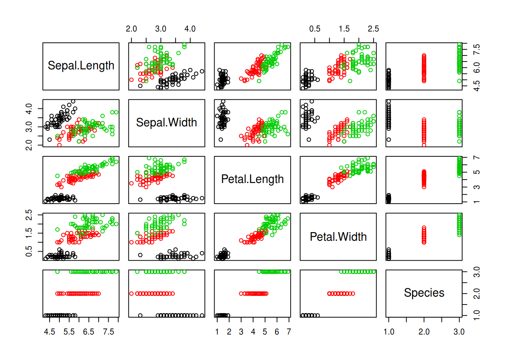

時はパイプ戦国時代．
Tidyverse が覇権を握る世界線において pipe とは magrittr::`%>%` のことでしょうか．私は pipeR::`%>>%` 派ですね．他にも wrapr::`%.>%` など，色々な宗派があります．
pipe の成り立ちを探る神学者たちも続々と表れております．
しかし，おそらくみなさんは遥か昔からパイプしていた．
R では全ての出来事が関数呼び出しです．
[ や [[ も関数に過ぎません．ところで皆さんこんなことしたことありませんか？
iris[iris$Sepal.Length > 3, "Sepal.Width"][1:5]## [1] 3.5 3.0 3.2 3.1 3.6上記は更に以下のように書き換えられます．
iris[iris$Sepal.Length > 3, ][, "Sepal.Width"][1:5]## [1] 3.5 3.0 3.2 3.1 3.6すると，
- iris の Sepal.Length が 3より大きいものを抽出
- 1から Sepal.Width 列を抽出
- 先頭の5つの要素を取り出し
と pipe-like に書かれていますね．というか機能が限定的なだけでこれはパイプと呼んで差し支えないです．
この性質をうまく利用しているのが data.table パッケージです．
data.table:::`[` では， [...] 内でデータの選択だけではなく，加工もできるように拡張されています．あまり読み易いとは言えませんが，dplyr::summarize 相当のこともできます．
as.data.table(iris)[, lapply(.SD, mean), by= Species]## Species Sepal.Length Sepal.Width Petal.Length Petal.Width
## 1: setosa 5.006 3.428 1.462 0.246
## 2: versicolor 5.936 2.770 4.260 1.326
## 3: virginica 6.588 2.974 5.552 2.026data.table パッケージによる [ の拡張と，[ が元々備えている左辺を第一引数に取り [...]
の内部を第二引数以降に渡す性質を応用すると，以下のようなパイプラインを実現できます．
library(data.table)
as.data.table(iris)[, x := Sepal.Length * 3][, .(Sepal.Length, x)][1:3, ][]## Sepal.Length x
## 1: 5.1 15.3
## 2: 4.9 14.7
## 3: 4.7 14.1- iris に x列を追加し，Sepal.Length を3倍した値を代入
- 1 から Sepal.Length 列と x列を抽出
- 先頭の3行を抽出
- プリント (おまじない．今回はなくてもいける．)
これを知ると，思うわけです．data.table 以外でも [ を使って柔軟なパイプラインを築けるのでは……？
そこでやってみたのが以下．副作用もばっちり実現できていますね!!
# `[` を上書きするので，元々の `[` の機能を関数 `extract` に移譲しましょう．
extract <- base::`[`
#
`[` <- function(x, f, ...) f(x, ...)
# テスト
iris[
function(x) {plot(x, col = iris$Species); x} # 副作用で plot
][
extract, , -5 # iris[, -5] 相当
][
kmeans, 3 # kmeans で3つのクラスタに分ける
][
summary
]
## Length Class Mode
## cluster 150 -none- numeric
## centers 12 -none- numeric
## totss 1 -none- numeric
## withinss 3 -none- numeric
## tot.withinss 1 -none- numeric
## betweenss 1 -none- numeric
## size 3 -none- numeric
## iter 1 -none- numeric
## ifault 1 -none- numeric# 良い子のみんなは遊び終わったら `[` の上書きを解除しましょう．
rm("[")わかりましたか，みなさん．羽鳥神が現れるよりも前から世界は光に満ちていたのです．
Enjoy!!